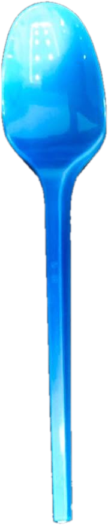

Chaque café mérite sa spatule.
PAC Emballage fabrique les spatules, cuillères, fourchettes et gobelets en plastique alimentaire des distributeurs automatiques, des cafés et des traiteurs algériens.



Vos couverts, à vos couleurs.
Cuillères et fourchettes en sachets de 40 pièces, dans les coloris qui collent à votre enseigne ou à votre événement. Touchez une couleur.
Cuillère plastique — Bleue

Six produits, zéro compromis.

Spatule à café 90 mm
La spatule des distributeurs automatiques : 90 mm, en sachets de 100 et cartons de 2 500.
Cuillère plastique
Cuillère à usage unique en sachet de 40 pièces, en blanc, bleu, rouge, rose ou bleu cristal.

Fourchette plastique
Fourchette à usage unique en sachet de 40 pièces, en blanc, bleu, rouge ou rose.

Cuillère premium
Cuillères finition or, argent ou cristal pour les tables de réception et les traiteurs.

Gobelets plastique
Gobelets transparents et gobelets couleur café pour boissons froides et chaudes.

Seau plastique avec couvercle
Seau alimentaire avec anse et couvercle, pour la conservation et le transport.

La spatule des distributeurs automatiques.
prêtes à charger
Spatule en plastique alimentaire conçue pour les distributeurs automatiques de boissons chaudes. Longueur 90 mm, emballée par 100 dans des sachets et livrée en cartons de 2 500 pièces, prête à charger dans les machines.
- Longueur90 mm
- MatièrePlastique alimentaire
- ConditionnementSachets de 100
- Carton2 500 spatules
- UsageDistributeurs automatiques de café
Pensé pour ceux qui servent vite.

Distributeurs automatiques
Spatules 90 mm et gobelets prêts à charger, en cartons de 2 500.

Cafés & restauration rapide
Couverts en sachets de 40 pour la vente à emporter.

Traiteurs & réceptions
Cuillères premium or, argent et cristal pour vos tables.

Grossistes & revendeurs
Sachets de marque prêts pour le rayon, prix fabricant.
Le fabricant, en direct.
Plastique alimentaire
Des matières adaptées au contact alimentaire, du café chaud au plat à emporter.
Usine à Alger
Production à Baba Ali : délais courts, interlocuteur direct, suivi de vos commandes.
Prix fabricant
Pas d'intermédiaire entre vous et la production : des prix concurrentiels sur les volumes.
Prêt à revendre
Sachets de marque de 40 ou 100 pièces, cartons de 2 500 : direct en rayon ou en machine.
Votre prochaine commande commence par un message.
Produit, coloris, quantité : on vous répond avec un prix fabricant.